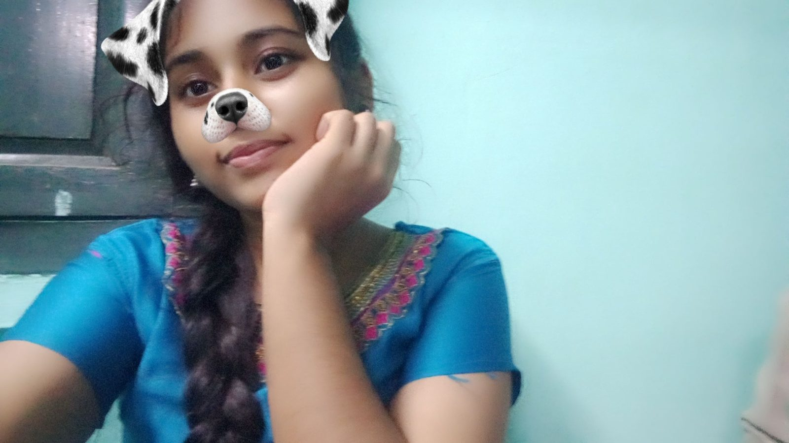
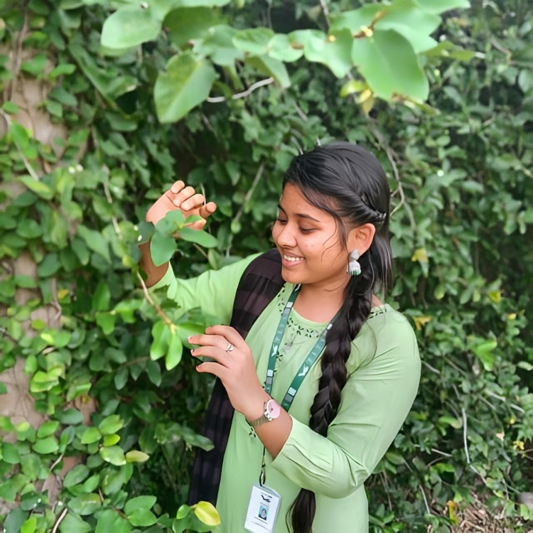

A Story I'll Always Be Grateful For
This is for you ✨️🤍
I never planned on getting attached to you. It just happened slowly— through random conversations, random talks, and the little moments that somehow stayed with me.
Somewhere between “pathuko" and “safe ah reach agitiya” you became someone I genuinely cared about.
You became the person I wanted to tell things to, the person whose silence I noticed, and whose happiness quietly mattered to me.
Maybe I'll never find the right words to explain what you mean to me.
But if you ever wonder whether your presence made a difference — it did.
Some people become memories, but a few become a feeling you carry forever. 💌
And no matter where life takes us,
I'll always be grateful that,
I got to have you in my life. 🫶

You Will Always Matter
“You mattered the most in my life so far and wish to matter the same way further too...”
“You were, you are, and you will be the most beautiful story of my life 🫶😇”
